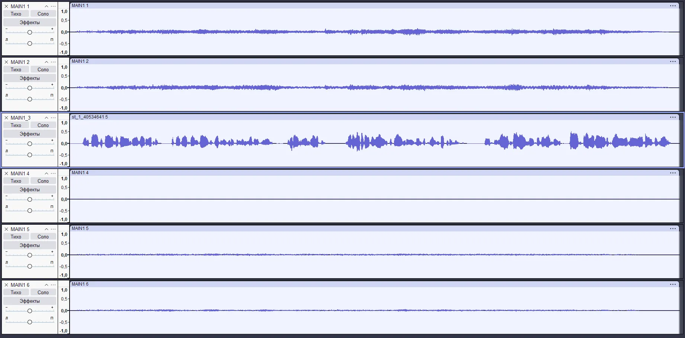

Как создать свое видео USM¶
В движке можно использовать видеофайлы. Их можно вызывать из сцен, они используются при загрузке игры, при загрузке сохранения/локации в определенный сюжетный момент.
Как и многое в REDkit, работа с видео не самая очевидная. Движок использует формат USM (CRI Sofdec2) - это контейнер, содержащий видео и несколько аудиодорожек для разных языков.
Разработчики, как водится, не позаботились о нормальном инструменте для работы с этим форматом, поэтому будем использовать сторонний софт.
Учтите, что все видео жёстко привязаны к папке movies, так как пути к ним относительные.
А например, загрузочные экраны вообще закреплены за папкой movies/cutscenes/storybook
Необходимые инструменты¶
Для распаковки USM¶
- VGMToolBox - Распаковщик USM
- vgmstream - Конвертер аудио
- FFmpeg - Универсальный конвертер
Для упаковки USM¶
- Scaleform VideoEncoder - Упаковщик USM
- FFmpeg - Универсальный конвертер
- Audacity (или любой другой аудиоредактор)
Распаковка USM¶
Если нужно отредактировать уже существующее видео, сначала его нужно распаковать.
- Извлечение видео и аудио
- Откройте VGMToolBox
- Перейдите в Misc. Tools → Stream Tools → Video Demultiplexer
- В списке Format выберите USM (CRI Movie 2)
- Поставьте галочку Extract Audio and Video
- Перетащите нужные файлы в пустую область
После этого в папке с оригинальными файлами появится:
- Видео в формате .m2v
- Несколько аудиофайлов .adx (по числу локализаций)
Конвертация аудио¶
Файлы .adx содержат звуковые дорожки. Названия у них невнятные, но по цифрам в имени можно определить, какому языку принадлежит конкретный файл.
| ID | Язык |
|---|---|
| 40534641 | Корневой 5.1 трек с музыкой и английской озвучкой |
| 41534641 | Польский |
| 42534641 | Немецкий |
| 44534641 | Французский |
| 48534641 | Русский |
| 49534641 | Китайский |
| 4A534641 | Японский |
| 4B534641 | Корейский |
| 4C534641 | Португальский |
| F534641 | Альтернативный английский |
| 50534641 | Альтернативный польский |
| 51534641 | Альтернативный немецкий |
| 53534641 | Альтернативный французский |
| 57534641 | Альтернативный русский |
| 58534641 | Альтернативный китайский |
| 59534641 | Альтернативный японский |
Чтобы сконвертировать .adx в .wav, используем vgmstream:
- Запустите консоль (WIN + R → CMD)
- Перейдите в папку с vgmstream командой:
bash cd C:\\путь\к\vgmstream - Введите команду:
Важно!
Полученный корневой 5.1-трек (40534641) после конвертации будет с неправильным порядком каналов.
Исправить можно перемапив в Audacity, либо через FFmpeg:
Упаковка USM¶
Тут все немного сложнее так как требует подготовки файлов.
Формат аудио¶
Самый важный аудиофайл - корневой. Он содержит 5.1 звук (шесть каналов).
Даже если у вас только стерео, всё равно нужно создать пустые каналы в любом аудиоредакторе и положить озвучку в правильный канал.
Распределение каналов (5.1):
| Название | Номер канала |
|---|---|
| Левый фронт (LF) | 1 |
| Правый фронт (RF) | 2 |
| Центральный (C) | 3 |
| Сабвуфер (LFE) | 4 |
| Левый окружающий (LS) | 5 |
| Правый окружающий (RS) | 6 |
Что значит это на практике?
- LF и RF - музыка
- LS и LS - звуки окружения
- С - только голос, он и меняется при смене языка
- LFE - практически не используется и зачатую пустой
Пример правильного аудио: 
Остальные аудиофайлы - это моно-дорожки, содержащие только голос.
Важно!
- Все аудиофайлы должны быть в формате pcm_s16le или pcm_s32le
- Длина всех файлов должна быть одинаковой с корневым 5.1-файлом
Подготовка файлов¶
Сначала конвертируем видео в AVI с максимальным качеством:
Теперь подготавливаем аудиофайлы.
Конвертация корневого 5.1-аудио:
Конвертация остальных дорожек (моно)
Упаковка в USM¶
Используем Scaleform VideoEncoder.
- В поле Input Name укажите AVI-файл
- В Codec выберите Sofdec.Prime
- В разделе Other Audio добавьте все аудиофайлы
Размещаем треки согласно таблице:
| Трек | Язык |
|---|---|
| Track 0 | Корневой 5.1 трек с музыкой и английской озвучкой |
| Track 1 | Польский |
| Track 4 | Французский |
| Track 8 | Русский |
| Track 9 | Китайский |
| Track 10 | Японский |
| Track 11 | Корейский |
| Track 12 | Португальский |
| Track 15 | Альтернативный английский |
| Track 16 | Альтернативный польский |
| Track 17 | Альтернативный немецкий |
| Track 19 | Альтернативный французский |
| Track 23 | Альтернативный русский |
| Track 24 | Альтернативный китайский |
| Track 25 | Альтернативный японский |
Можете обратить внимание, что треки идут с пропусками. Скорее всего это резерв под не озвученные языки.
Если нужной локализации в списке нет, движок воспроизводит Track 0 с озвучкой по-умолчанию, там обычно английский, но в вашем моде это может быть другой язык если он не локализирован.
Альтернативные озвучки нужны для загрузочных экранов. Обычно в них другая версия файла частью истории. Можно выбирать в журнале, какую воспроизводить.
Готово
После того как вы все назначите просто нажмите кнопку Encode.
Субтитры¶
Движок поддерживает встроенные субтитры для USM-видео, и они хранятся в отдельных текстовых файлах с расширением .subs.
Эти файлы находятся в папке subs, расположенной рядом с самим USM-видео.
Субтитры для альтернативной озвучки расположены в папке altsubs.
Формат¶
Каждый файл субтитров должен называться так же, как видео, с добавлением кода языка в формате ISO.
Например, если у вас есть ролик st_1.usm, то файлы субтитров будут выглядеть так:
subs/st_1_en.subs (английские субтитры)
subs/st_1_ru.subs (русские субтитры)
subs/st_1_de.subs (немецкие субтитры)
Структура файла субтитров¶
Файлы .subs используют простой текстовый формат. Вот пример:
- Первая строка - глобальная стартовая точка (в миллисекундах), с которой начинается отсчёт таймкодов.
- Каждая последующая строка содержит три параметра:
- Время появления текста (относительно глобальной стартовой точки).
- Время исчезновения текста.
- Сам текст субтитров.
Время указывается в миллисекундах!
Автор: leviofanh
Документация поддерживается участниками сообщества REDkit RU